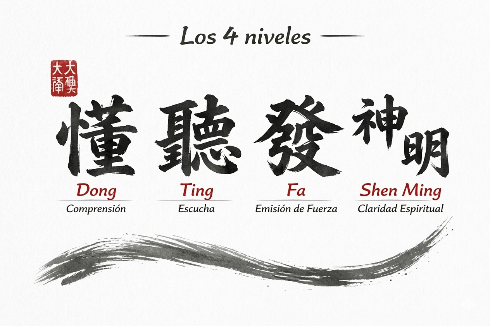

Francois Jullien, en su obra Las transformaciones silenciosas, expone las diferencias entre el pensamiento chino —arraigado en el taoísmo— y el pensamiento occidental, fundamentado en la filosofía griega. El autor describe con gran precisión cómo la tradición china concede un valor esencial a la anticipación, a la observación minuciosa y a la capacidad de detectar e interpretar pequeñas causas, señales o patrones que anuncian un resultado futuro. También subraya la importancia de intervenir justo en el punto en el que esas causas comienzan a formarse, cuando aún son casi imperceptibles y basta un esfuerzo mínimo para orientar el proceso hacia desenlaces completamente distintos.
Al leer este libro, uno podría pensar en numerosas ocasiones que Jullien está describiendo el arte del Tui Shou, donde resulta crucial percibir el origen de las transformaciones y saber en qué momento intervenir: justo cuando las acciones empiezan a tomar forma y todavía es posible influir en ellas con suavidad y eficacia.Tui Shou es, en esencia, el arte de la anticipación. Conviene distinguirla de la “recuperación”. El Tui Shou cultiva esa anticipación de la que habla Jullien: una transformación continua y silenciosa que nos permite mantener una posición ventajosa y estable.
Cuando la anticipación falla, no queda más remedio que recurrir a la recuperación: actuar cuando la situación ya se ha desarrollado demasiado y solo es posible resolverla mediante un esfuerzo mayor, con movimientos más bruscos y menos sutiles. La anticipación sería comparable a disuadir a un ladrón mediante simples placas de alarma; la recuperación, en cambio, sería enfrentarse a él cuando ya ha entrado en la casa.
Esta capacidad de anticipación y control se sostiene sobre un edificio de cuatro niveles: en la base se encuentra el Dong Jin, seguido por el Ting Jin, luego el Fa Jin y, en la cúspide, el Shen Ming.
Estos niveles están interconectados entre sí, del mismo modo que ocurre al aprender un idioma: no se estudia por separado la gramática, el vocabulario o la conversación, sino que todos se desarrollan simultáneamente. Con estos cuatro niveles sucede lo mismo: sin Dong Jin no puede surgir un Ting Jin adecuado; sin Ting Jin no es posible manifestar Fa Jin; y sin Fa Jin no se alcanza el Shen Ming. Omitir uno de ellos afecta inevitablemente a los demás.